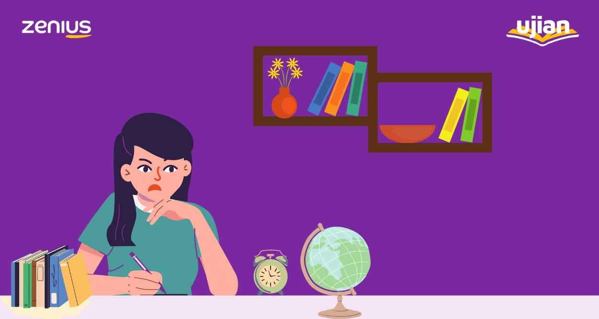

|  |
|
Hi, Sobat Zenius pejuang UTBK 2022! Gimana nih persiapan UTBK-nya? Udah mateng belum? Belum mateng? Materi apa yang belum? Materi Pengetahuan dan Pemahaman Umum (PPU) UTBK, ya?
Ok, kita bahas seluk beluk tentang TPS PPU UTBK, tips dan contoh soalnya di sini. Pasti elo sadar kalau dunia dua tahun belakangan ini memang lagi diuji. Apalagi dengan adanya COVID-19 yang membuat masalah ke semua lapisan masyarakat. Untuk kita yang masih pelajar, pandemi menyebabkan kegiatan belajar mengajar tidak bisa diadakan secara maksimal. Bukan cuma itu, pengadaan ujian kelulusan dan ujian seleksi masuk perguruan tinggi pun disesuaikan: mulai dari UN yang dihapus, ditundanya pelaksanaan UTBK, hingga berita terbaru bahwa TKA alias Tes Kompetensi Akademik ditiadakan di UTBK tahun 2020 karena adanya gangguan dari pandemi Covid-19. Namun kabar terbaru tahun 2021, Lembaga Tes Masuk Perguruan Tinggi (LTMPT) menggelar kembali ujian Tes Kompetensi Akademik (TKA) pada Ujian Tulis Berbasis Komputer-Seleksi Bersama Masuk Perguruan Tinggi Negeri (UTBK-SBMPTN). Gue ngerti banget, banyak dari kalian yang pasti frustrasi (walaupun gue yakin pasti ada juga yang lega, hehe) karena merasa usaha kalian selama ini sia-sia. But rest assured Sobat Zenius, gak ada yang sia-sia dalam belajar. Kegigihan dan pola pikir yang udah kalian raih dengan belajar yang tekun dan cerdas itu bakal berguna banget pas kalian kuliah nanti. Gue jamin. Okay, before I ramble further, di artikel kali ini, gue mau bahas tentang serba-serbi dan tips untuk Pengetahuan dan Pemahaman Umum (PPU) yang menjadi bagian dari TPS di UTBK. Kalau elo mau tau informasi secara lengkap mengenai TPS secara general, elo bisa langsung klik di sini. Sebelum kita masuk ke pengertian Pengetahuan dan Pemahaman Umum, gue mau bahas sedikit tentang TPS dan proporsi soalnya di UTBK. Inget, take it with a pinch of salt. Ini adalah komposisi soal TPS UTBK tahun-tahun sebelumnya dan kita masih belum yakin dengan komposisi tahun ini, tapi gue rasa bisa dijadikan acuan untuk bikin strategi sementara. Bisa kalian lihat alokasi soal dan waktu untuk setiap mata pelajaran TPS di tabel di bawah: |